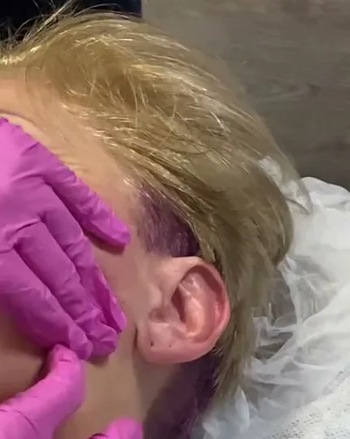

Авторские техники Елены
Массаж лица
- Буккальный и скульптурный массаж лица2 дня
- Углублённый буккальный и скульптурный1 день
- Хиромассаж лица - испанский моделирующий2 дня
- Углублённый хиромассаж лица1 день
- Эргономика мастера - в каждом семинаре